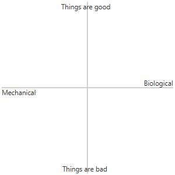

Like the previous year, 2024 started with a lot of gaming, but eventually it was overcome with surprisingly large side projects. I got to learn a lot about weather data and the scattershot availability of weather icons. Oh well, there were plenty of good games along the way.
For this year, nothing is ordered, but everything is measured. On one axis, between mechanical and biological. On the other, how well things are going for the characters. The punchline comes later.
I also thought about adding a puzzle-o-meter rating, but I... haven't... completed... many puzzle games this year.
Games without commentary are generally games that have had plenty of public exposure, and I don't have enough of a Take to elaborate on.
As usual, even if I spend time complaining about a game, any game you see on this list is recommended. If you'd like to use this list as a gift guide, the safest purchases are probably the ones that don't have commentary, public traction means a lot.
Poke me on discord or something if your interest is piqued and you want some clarification on the various comments here.
-nic
Here we go! Games finally measured. Numbers without fail. The ground truth. The incomparable, compared.
And as a bonus, a selection of screenshots...
That's all! Thanks for reading. I have quite a few mostly complete games to finish, so with any luck 2025 will have a large list, but I might start bigger projects...
As usual, ask me anything at your leisure.